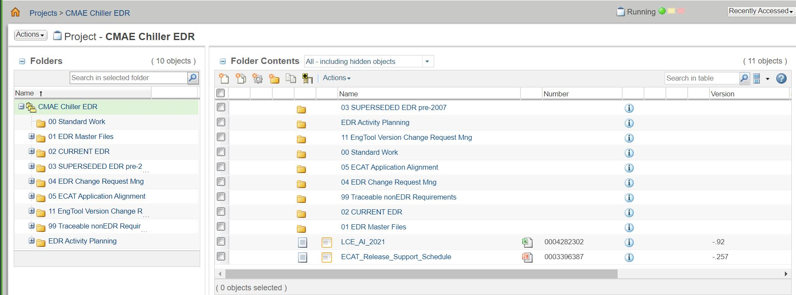
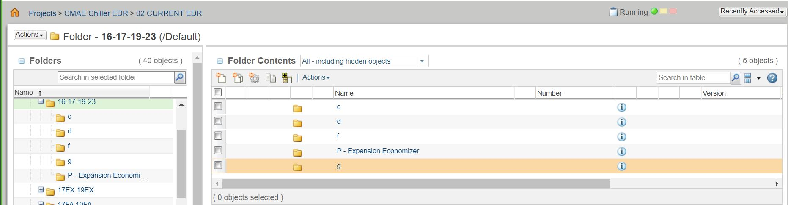
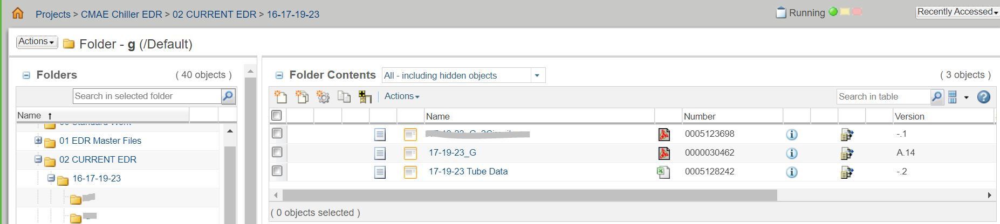

2. CMAE Folder Structure Updates¶

1. Sections Combination Happened both in “Master” and “Current” folder:
| Tube EDR folder Structure in Windchill BEFORE was:
Records tube weight information；
Records tube dimensions;
Records both heat transfer / water >pressure methodologies and necessary data.  |
| Tube EDR folder Structure in Windchill NOW is:
Combine 17-19-23 C and D and G together, into G sction. Records tube weight, dimension, heat transfer and water pressure methodologies, necessary heat transfer and water pressure drop data. |
2. Two Seperated G Section Files both in “Master” and “Current” folder:
| BEFORE: Only one 17-19-23 G file, all heat transfer content is implemented in this word/pdf section file. NOW: Two seperated section files are used.
 |